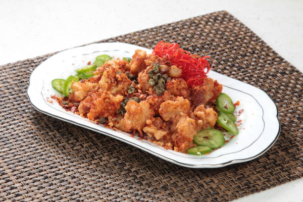

Ras Malai: $4.99
A delicious and indulgent Indian dessert made from soft, spongy, and creamy white dumplings of chhena (Indian cottage cheese) soaked in a fragrant, rich milk syrup.
Gulab Jamun: $3.99

Iconic Indian dessert that is made from deep-fried dough balls that are soaked in a fragrant sugar syrup
Bread Halwa: $4.99

Indian dessert made from bread, cooked in ghee (clarified butter), and simmered in a sweet, rich sugar syrup